🌿 1. Nóc Nhà Nam Bộ & Đệ Nhất Thiên Sơn
Sừng sững hiên ngang giữa vùng đồng bằng phì nhiêu Nam Bộ, ngọn núi Bà Đen (986m) được mệnh danh là "Nóc nhà Đông Nam Bộ" và "Đệ nhất thiên sơn". Không chỉ là chốn địa linh tụ khí với truyền thuyết Linh Sơn Thánh Mẫu linh ứng hơn ba thế kỷ, Tây Ninh còn là miền đất linh thiêng của Tòa Thánh Cao Đài với kiến trúc vạn giáo quy nguyên độc nhất vô nhị, nơi lưu giữ căn cứ cách mạng Chiến khu R hào hùng và nền ẩm thực chay tinh tế đã trở thành Di sản văn hóa phi vật thể quốc gia.Nằm cách TP. Hồ Chí Minh khoảng 90km về phía Tây Bắc, Tây Ninh sở hữu địa hình chuyển tiếp đặc sắc giữa vùng cao nguyên bán sơn địa và đồng bằng châu thổ. Nổi bật nhất trên nền trời là ngọn núi Bà Đen hình nón khổng lồ cao 986m quanh năm mây phủ trắng xóa. Khí hậu Tây Ninh mang tính chất nhiệt đới gió mùa phương Nam nhưng trên đỉnh núi cao lại mát mẻ như xứ ôn đới, nhiệt độ thường thấp hơn vùng đồng bằng từ 8°C đến 10°C, mang đến trải nghiệm bốn mùa trong một ngày độc đáo.
Vào những tháng cuối năm và đầu mùa khô (tháng 10 đến tháng 4 năm sau), Tây Ninh là điểm hẹn săn mây lý tưởng bậc nhất phía Nam. Tại đỉnh núi Bà Đen, hiện tượng kỳ thú "mây thấu kính đĩa bay" (Lenticular clouds) thường xuyên xuất hiện tạo nên vòng hào quang mây khổng lồ bao bọc lấy đỉnh thiêng, thu hút hàng triệu lượt du khách và Phật tử hành hương chiêm bái.
🏛️ 2. Vị Trí Địa Lý & Dấu Ấn Lịch Sử Căn Cứ Trung Ương Cục
Tây Ninh có vị trí địa kinh tế và quốc phòng đặc biệt quan trọng với hơn 240km đường biên giới tiếp giáp Vương quốc Campuchia. Vùng đất này từng là căn cứ địa cách mạng bất khả xâm phạm của quân dân miền Nam trong hai cuộc kháng chiến vĩ đại của dân tộc.
Theo Quyết định số 548/QĐ-TTg ngày 10/5/2012 của Thủ tướng Chính phủ, Căn cứ Trung ương Cục miền Nam (Chiến khu R) tại huyện Tân Biên đã được xếp hạng là Di tích quốc gia đặc biệt. Nơi đây từng là đầu não lãnh đạo toàn bộ phong trào cách mạng giải phóng miền Nam (1961 - 1975) dưới sự chở che của rừng già Chàng Riệc và những mái nhà lá trung quân không bén lửa.
🏆 Kỷ Lục Guinness Thế Giới Trên Đỉnh Núi Bà Đen
Theo Quyết định số 1099/QĐ-TTg ngày 05/9/2018 của Thủ tướng Chính phủ, Núi Bà Đen được phê duyệt quy hoạch là Khu du lịch quốc gia. Năm 2021, Tổ chức Kỷ lục Guinness thế giới chính thức xác lập kỷ lục cho Tượng Phật Bà Tây Bổ Đà Sơn trên đỉnh núi cao 986m là "Tượng Phật Bà bằng đồng cao nhất châu Á tọa lạc trên đỉnh núi" với chiều cao 72m đúc từ hơn 170 tấn đồng đỏ nguyên khối.
📜 3. Huyền Thoại Linh Sơn Thánh Mẫu & Tích Xưa Vùng Đất
✨ Truyền tích Linh Sơn Thánh Mẫu (Bà Đen — Nàng Đênh)
Theo dân gian lưu truyền từ thời chúa Nguyễn, nàng Đênh (Lê Thị Thiên Hương) là thiếu nữ tài sắc vẹn toàn, con quan tri huyện mồ côi mẹ, có lòng hướng Phật và một lòng son sắt yêu chàng trai cùng làng Lê Sĩ Triệt. Khi chàng Triệt tòng quân đánh giặc Tây Sơn, nàng Đênh ở nhà bị kẻ xấu mưu toan làm nhục. Để giữ trọn trinh tiết, nàng đã gieo mình xuống vực sâu tuẫn tiết. Linh hồn nàng hiển linh báo mộng chỉ đường cho quan quân, phù trợ chúa Nguyễn Ánh thoát hiểm trong lúc lánh nạn và bảo bọc mùa màng cho dân bản mường. Vua Gia Long sau khi lên ngôi đã sắc phong cho nàng là Linh Sơn Thánh Mẫu, lập đền thờ tại hang đá núi Bà Đen để nhân dân đời đời hương khói tri ân.
✨ Huyền tích Đền Thánh Cao Đài — Kiến trúc Vạn Giáo Quy Nguyên
Khởi dựng từ năm 1931 và hoàn thành năm 1955, Tòa Thánh Tây Ninh là thánh địa trung ương của đạo Cao Đài (Đại Đạo Tam Kỳ Phổ Độ). Toàn bộ công trình dài 100m được xây dựng hoàn toàn bằng sức lao động thủ công của các tín đồ ăn chay trường mà không dùng đến bản vẽ kiến trúc phương Tây hay máy móc cơ giới. Điểm nhấn trung tâm là biểu tượng Thiên Nhãn (Mắt Trời tỏa hào quang) và các cột trụ rồng cuốn sơn thếp rực rỡ, tượng trưng cho sự hợp nhất tinh hoa của Nho giáo, Đạo giáo, Phật giáo, Kitô giáo và Hồi giáo.
✨ Truyền kỳ cây lá Trung Quân — Loài lá không bén lửa Chiến khu R
Trong những năm tháng kháng chiến ác liệt tại Căn cứ Trung ương Cục miền Nam, quân dân ta đã phát hiện ra loài cây lá trung quân độc đáo của rừng già Tây Ninh. Lá cây dày, dai, có chứa hàm lượng nước tự nhiên cao nên khi gặp lửa bom đạn chỉ quắt lại mà không hề bắt cháy bùng phát. Nhờ đặc tính kỳ diệu đó, hàng ngàn lán trại, nhà hội trường của các đồng chí lãnh đạo Trung ương Cục đã đứng vững an toàn dưới làn mưa bom bão đạn của kẻ thù.
🌸 4. Chuỗi Hình Ảnh 4 Mùa Du Lịch Tây Ninh
Khí hậu Tây Ninh chia hai mùa mưa nắng rõ rệt, kết hợp cùng các dịp đại lễ tâm linh quy mô lớn tạo nên bốn mùa trải nghiệm kỳ thú:
Mùa Săn Mây Đĩa Bay Đỉnh Núi Bà
Thời điểm vàng để chiêm ngưỡng biển mây cuồn cuộn tràn qua mỏm đá đỉnh 986m và hiện tượng mây thấu kính UFO hình đĩa bay kỳ ảo bao quanh tượng Phật Bà trong ánh bình minh rực rỡ.
Mùa Hội Xuân Núi Bà Đen
Lễ hội hành hương lớn nhất phương Nam thu hút hàng triệu Phật tử về chiêm bái Linh Sơn Tiên Thạch Tự, cầu tài lộc bình an dưới làn khói trầm thơm ngát và sắc hoa mai vàng khoe sắc thắm.
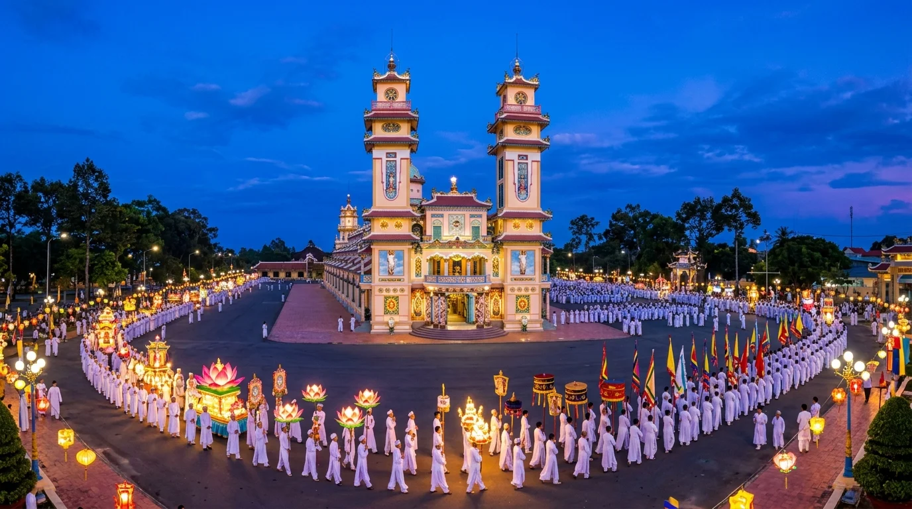
Tháng Giêng & Tháng Tám âm lịchMùa Đại Lễ Tòa Thánh Cao Đài
Không gian lễ hội tôn giáo rực rỡ sắc màu nhất Đông Nam Bộ với màn rước cộ hoa Long Mã, triển lãm hàng trăm gian quả phẩm nghệ thuật và các màn múa rồng nhang độc đáo.
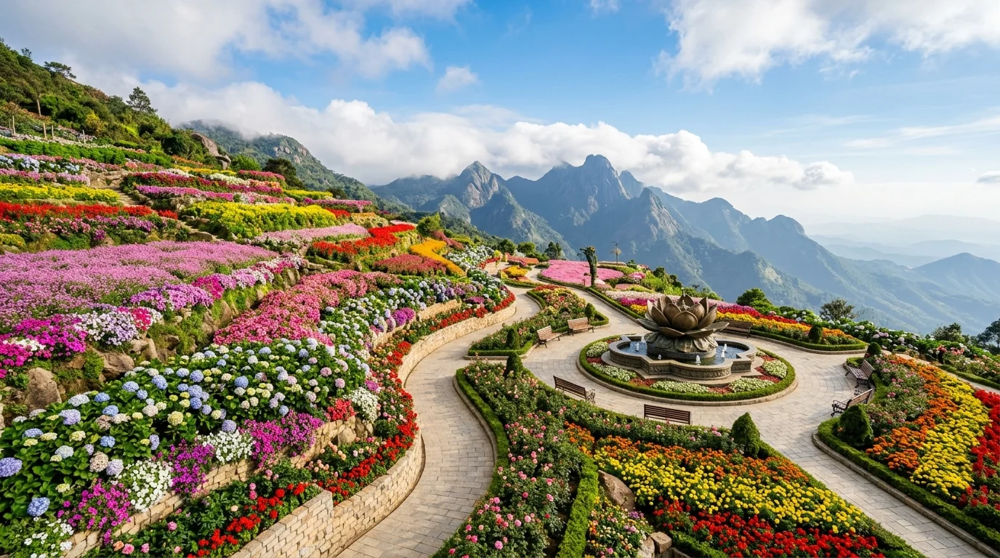
Tháng 3 – 5Mùa Muôn Hoa Nở Rộ Trên Đỉnh Mây
Quần thể cảnh quan trên đỉnh núi Bà Đen biến thành vườn địa đàng rực rỡ với hàng trăm ngàn gốc hoa cẩm tú cầu, hoa tulip, ngọc thảo khoe sắc quanh các quảng trường đá và đài sen đồng thau.
📸 5. Top 10 Thắng Cảnh Biểu Tượng & Dấu Tích Lịch Sử
(Nhấp vào từng hình ảnh để xem chi tiết ảnh chất lượng cao và câu chuyện truyền tích lịch sử chính thống)
1. Đỉnh Núi Bà Đen & Tượng Phật Bà Tây Bổ Đà Sơn
Nóc nhà Nam Bộ cao 986m với pho đại tượng Phật Bà bằng đồng cao 72m đứng uy nghi giữa biển mây bồng bềnh và muôn hoa rực rỡ quanh năm.
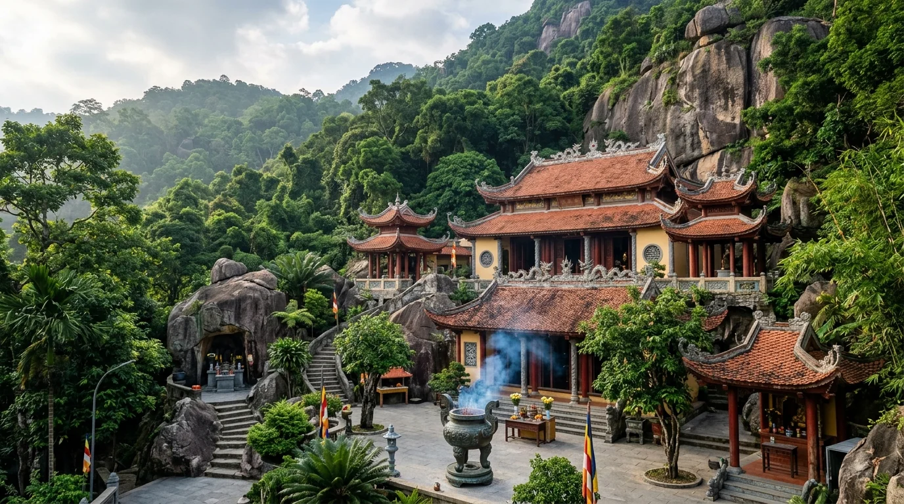
2. Quần Thể Chùa Bà Đen (Linh Sơn Tiên Thạch)
Cổ tự hơn 300 năm linh thiêng nép mình bên vách đá hoa cương, điểm tựa tâm linh vững chãi của người dân Nam Bộ.
3. Đại Tượng Phật Di Lặc Sa Thạch
Pho tượng Phật Di Lặc bằng đá sa thạch kỳ vĩ bậc nhất thế giới, nụ cười an lạc cứu rỗi nhân sinh bên thác nước tuôn chảy róc rách.
4. Hồ Dầu Tiếng & Đảo Nhím Hoang Sơ
'Biển hồ' nhân tạo lớn nhất Đông Nam Á với mặt nước mênh mông phẳng lặng như gương, điểm cắm trại ngắm hoàng hôn và chèo SUP lý tưởng bậc nhất phương Nam.
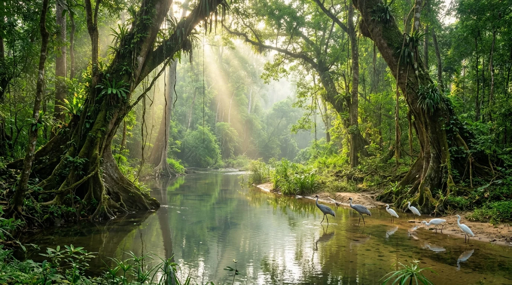
5. Vườn Quốc Gia Lò Gò — Xa Mát
Khu dự trữ sinh quyển chuyển tiếp độc đáo giữa rừng ngập phèn và rừng khô hạn, xứ sở bình yên của muông thú và sếu đầu đỏ.
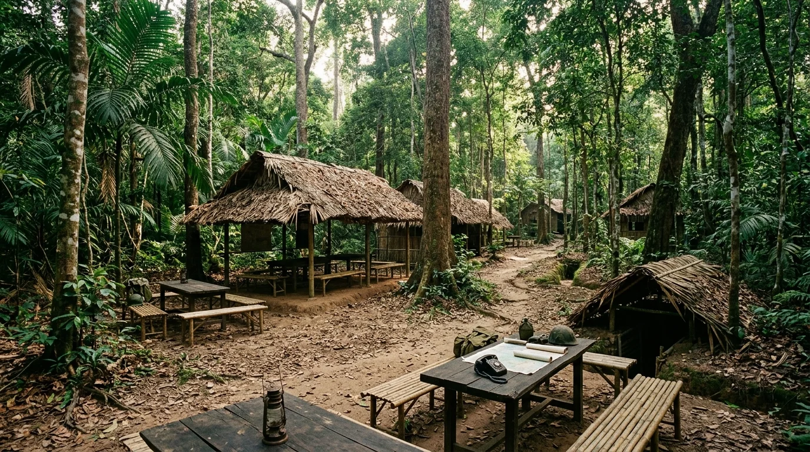
6. Căn Cứ Trung Ương Cục Miền Nam
Thủ đô kháng chiến giữa đại ngàn Chiến khu R, nơi ghi dấu những quyết sách lịch sử dưới mái nhà lợp lá trung quân bất tử.
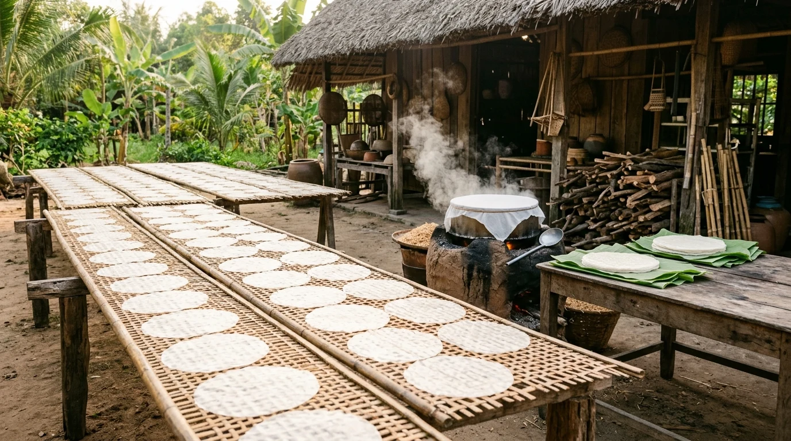
7. Làng Nghề Bánh Tráng Phơi Sương Trảng Bàng — Tinh Hoa Hứng Sương Đêm
Làng nghề truyền thống trăm năm gìn giữ kỹ nghệ tráng bánh hai lớp và phơi hứng sương đêm độc nhất vô nhị đất phương Nam, tạo nên món cuốn trứ danh ăn kèm rau rừng Vàm Cỏ.
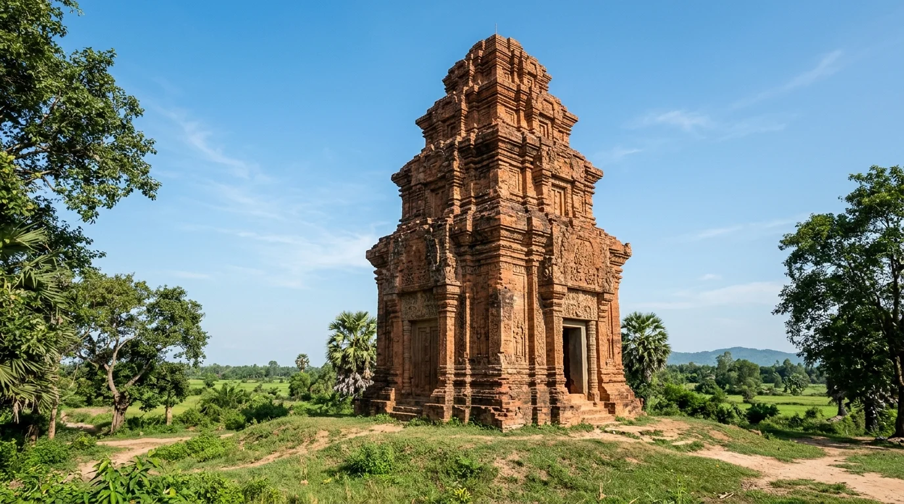
8. Tháp Cổ Chót Mạt — Di Tích Óc Eo
Ngọn tháp gạch nung ngàn năm tuổi trầm mặc giữa cánh đồng biên giới, minh chứng rực rỡ cho nền văn minh phù hoa Óc Eo cổ xưa.
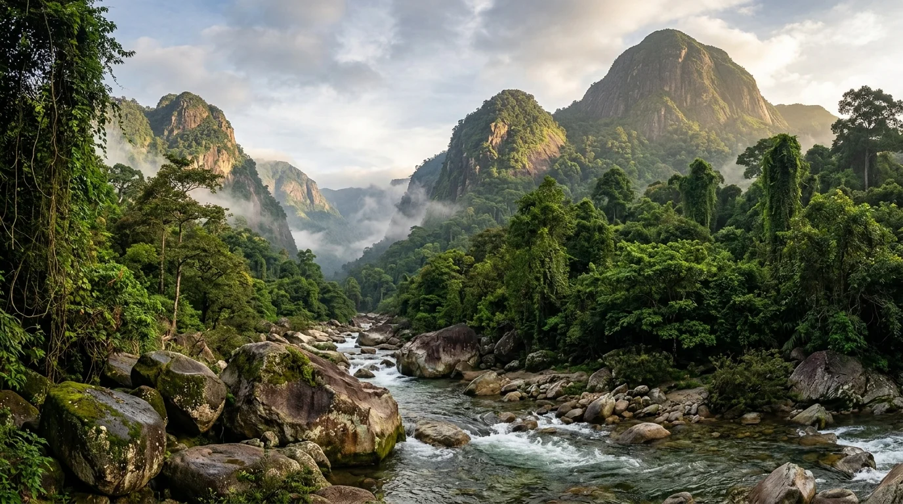
9. Thung Lũng Ma Thiên Lãnh Kỳ Bí
Thung lũng heo hút kỳ bí ẩn mình giữa ba ngọn núi đá hoa cương, nơi suối ngọc reo ca bên hồ đá nước xanh màu ngọc bích.
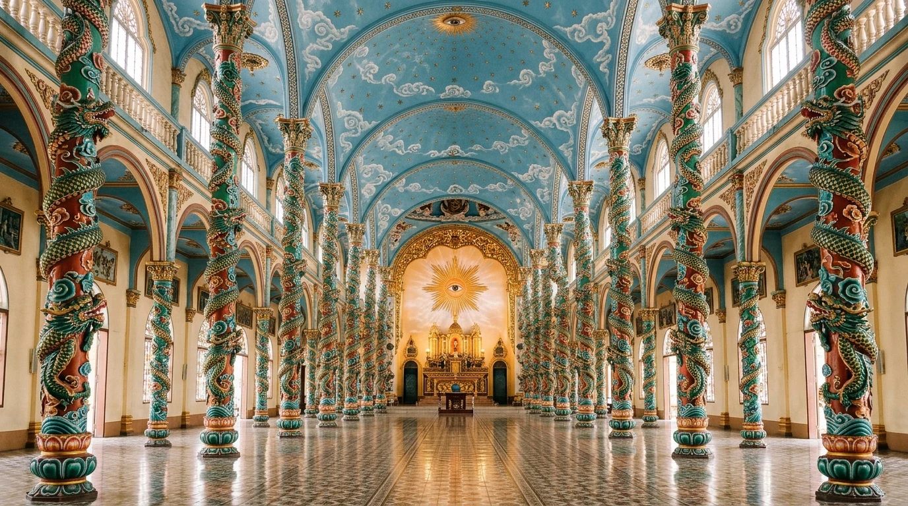
10. Tòa Thánh Tây Ninh — Tuyệt Tác Kiến Trúc Tôn Giáo Độc Bản
Thánh địa vĩ đại của đạo Cao Đài kết tinh tinh hoa kiến trúc Đông - Tây, choáng ngợp với nội điện cột rồng sơn ngọc bích nâng đỡ vòm trời ngàn sao lung linh huyền ảo.
🚗 6. Cẩm Nang Di Chuyển & Cáp Treo Sun World
Tây Ninh chỉ cách TP.HCM khoảng 90km - 100km, đường sá rộng rãi bằng phẳng với nhiều lựa chọn di chuyển trong ngày thuận tiện:
- Xe buýt / Xe khách Limousine từ TP.HCM: Tuyến xe limousine đón tận nơi (quận 1, Tân Bình, sân bay Tân Sơn Nhất) chạy thẳng TP. Tây Ninh / Núi Bà Đen mất khoảng 2 tiếng đến 2,5 tiếng. Giá vé: 100.000 – 160.000 VNĐ/lượt.
- Tự lái ô tô / Xe máy: Đi theo Quốc lộ 22 (tuyến Xuyên Á) qua ngã tư An Sương → Thị trấn Trảng Bàng → Gò Dầu → Quốc lộ 22B đến TP. Tây Ninh và Khu du lịch Núi Bà Đen.
- Hệ thống cáp treo Sun World Ba Den Mountain: Gồm 2 tuyến cáp treo hiện đại Doppelmayr: Tuyến cáp Vân Sơn đưa du khách từ chân núi lên thẳng đỉnh 986m (thời gian bay chỉ 8 phút), và Tuyến cáp Chùa Hang đưa du khách lên Quần thể chùa Bà (thời gian 5 phút). Nhà ga cáp treo Bà Đen từng đạt Kỷ lục Guinness là "Nhà ga cáp treo lớn nhất thế giới".
🍲 7. Tinh Hoa Ẩm Thực Vùng Đất Thánh
Ẩm thực Tây Ninh ghi dấu ấn sâu sắc với các di sản văn hóa phi vật thể quốc gia về nghề thủ công truyền thống và nghệ thuật ẩm thực chay độc đáo:
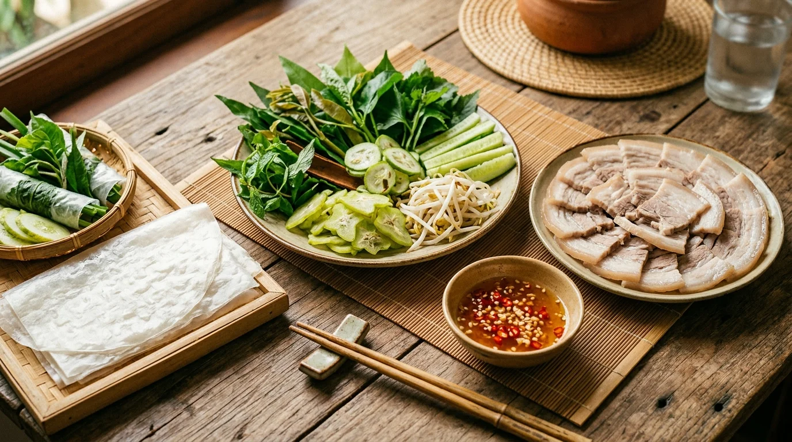
Di sản Quốc gia 2016Bánh Tráng Phơi Sương Trảng Bàng
💰 120.000 — 180.000 VNĐ / phần cuốn (2 người)Bánh tráng mềm dẻo đượm vị sương đêm, ôm trọn thịt bắp luộc thái mỏng giòn ngọt, đĩa rau rừng bạt ngàn lá cóc, quế vị, đọt xoài hòa quyện nước mắm tỏi ớt đậm đà.
📍 Quán Hoàng Minh, Út Huệ, Năm Dung (Quốc lộ 22, Thị trấn Trảng Bàng)
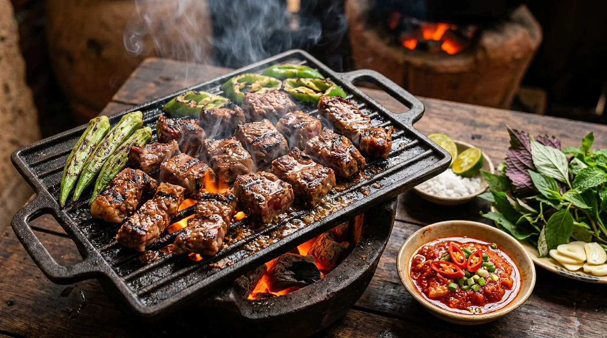
Đặc sản trứ danhBò Tơ Tây Ninh Nướng Than Hoa
💰 150.000 — 250.000 VNĐ / đĩa nướngThớ thịt bò tơ hồng tươi mềm mọng nước nướng xèo xèo trên than hồng, bì giòn sần sật bùi ngọt, cuốn rau rừng chấm chao ớt cay nồng tuyệt hảo.
📍 Bò tơ Năm Sánh (đường 30/4, TP. Tây Ninh), Bò tơ Nhật Trường
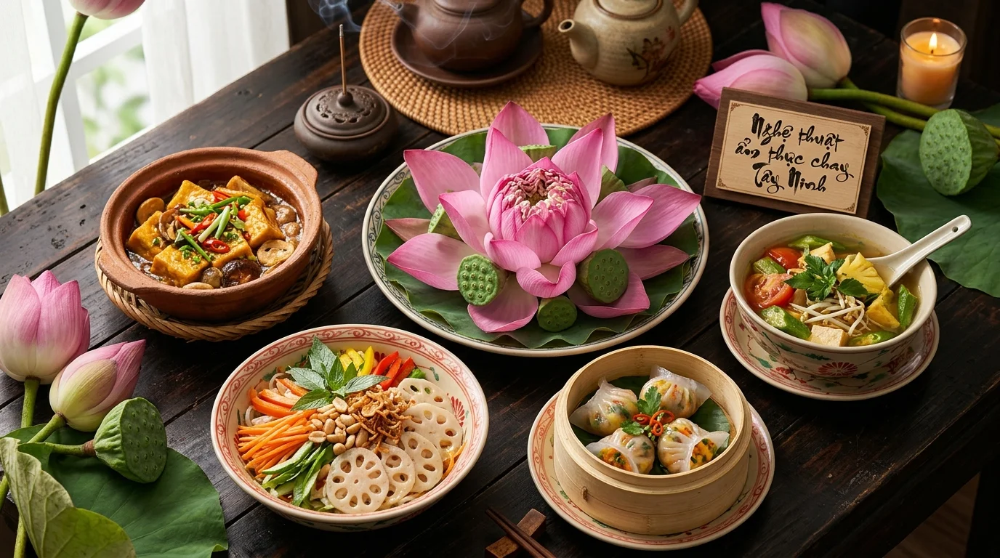
Di sản Quốc gia 2022Nghệ Thuật Ẩm Thực Chay Tây Ninh
💰 30.000 — 80.000 VNĐ / món (hoặc buffet chay)Mâm cỗ chay thanh tịnh được bài trí tinh tế như đóa sen ngát hương, hương vị ngọt lành tự nhiên từ nấm rừng và rau củ tươi, thanh lọc thân tâm.
📍 Các nhà hàng chay tại thị xã Hòa Thành, Chợ Long Hoa, Quán chay Vương Thiện
Bánh Canh Giò Heo Trảng Bàng
💰 40.000 — 55.000 VNĐ / tôNước dùng hầm xương trong vắt thanh ngọt, sợi bánh canh gạo nàng thơm trơn mướt mềm dẻo, khoanh giò heo luộc giòn sần sật chấm mắm tiêu đen cay nồng.
📍 Bánh canh Hoàng Minh, Út Huệ (Quốc lộ 22, Trảng Bàng)
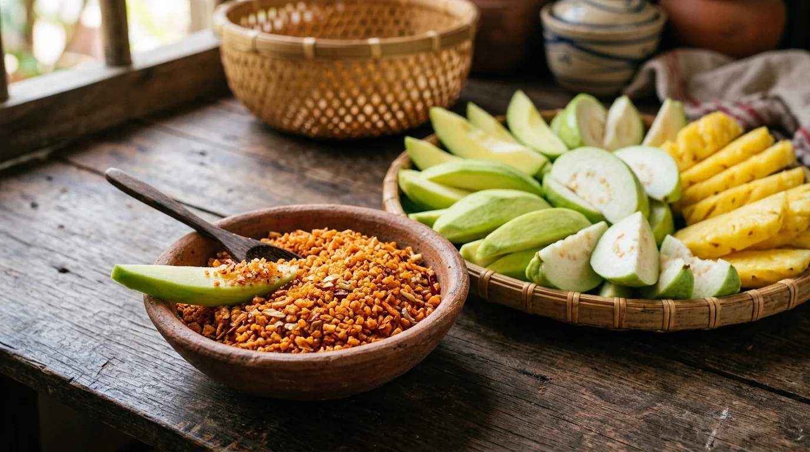
Di sản Quốc gia 2023Muối Tôm & Muối Ớt Tây Ninh
💰 25.000 — 60.000 VNĐ / hũ (150k - 200k/kg)Hạt muối to tròn giòn rụm màu cam óng ả, vị mặn ngọt cay nồng đậm đà hòa quyện hương thơm nức mũi của tôm sấy, gia vị chấm hoa quả không thể thiếu.
📍 Cơ sở sản xuất Muối tôm Ý Như, Chợ Long Hoa, Siêu thị đặc sản Tây Ninh
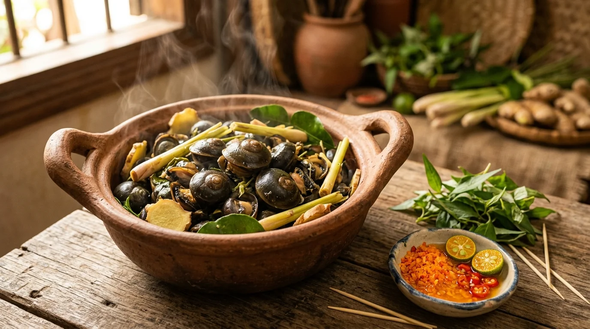
Đặc sản quý hiếmỐc Xu Núi Bà Hấp Sả Lá Chúc
💰 120.000 — 180.000 VNĐ / đĩaThịt ốc xu béo tròn giòn dai sần sật, phảng phất hương thơm ngát của sả và lá chúc rừng, vị ngọt bùi đượm thảo mộc thiên nhiên bồi bổ sức khỏe.
📍 Các nhà hàng ẩm thực dưới chân núi Bà Đen, thị xã Hòa Thành
💰 8. Bảng Giá Vé Cáp Treo Sun World & Điểm Tham Quan
| Hạng mục vé / Dịch vụ trải nghiệm | Địa điểm | Giá vé tham khảo |
|---|---|---|
| Vé cổng Khu du lịch Núi Bà Đen | Chân núi Bà Đen | 10.000 VNĐ (Người lớn) / 5.000 VNĐ (Trẻ em) |
| Cáp treo Đỉnh Núi Bà (Tuyến Vân Sơn khứ hồi) | Sun World Ba Den Mountain | 350.000 – 400.000 VNĐ (Người lớn) / 250.000 VNĐ (Trẻ em) |
| Cáp treo Chùa Hang (Khứ hồi) | Sun World Ba Den Mountain | 250.000 VNĐ (Người lớn) / 150.000 VNĐ (Trẻ em) |
| Combo Cáp treo Đỉnh Núi + Chùa Hang | Sun World Ba Den Mountain | 550.000 – 600.000 VNĐ / người |
| Tòa Thánh Tây Ninh | Thị xã Hòa Thành | Miễn phí vé (Ăn mặc trang nghiêm, bỏ giày dép bên ngoài) |
| Căn cứ Trung ương Cục miền Nam | Xã Tân Lập, Tân Biên | 20.000 VNĐ / người |
| Vườn Quốc gia Lò Gò - Xa Mát (Vé vào cổng) | Huyện Tân Biên | 20.000 VNĐ / người |
🧭 9. Gợi Ý Lịch Trình Khám Phá Tây Ninh
📅 Lịch trình 2 Ngày 1 Đêm (Hành trình tâm linh & Chinh phục nóc nhà Nam Bộ)
Ngày 1: TP.HCM xuất phát sớm → Ăn sáng bánh canh Trảng Bàng → Đến Tòa Thánh Tây Ninh chiêm bái và nghe kinh lúc 12:00 trưa → Trưa thưởng thức cơm chay nghệ thuật hoặc bò tơ nướng → Chiều lên cáp treo Chùa Hang viếng chùa Bà Đen → Tối dạo phố đêm TP. Tây Ninh và ăn ốc xu núi Bà.
Ngày 2: 6:00 sáng lên cáp treo tuyến Vân Sơn chinh phục Đỉnh Núi Bà Đen (986m), săn mây ngắm Tượng Phật Bà Tây Bổ Đà Sơn và Đại tượng Di Lặc sa thạch → Thưởng thức buffet trên đỉnh mây → Chiều ghé ngắm hoàng hôn Hồ Dầu Tiếng hoặc thăm Căn cứ Trung ương Cục miền Nam → Mua bánh tráng phơi sương, muối tôm làm quà rồi về lại TP.HCM.